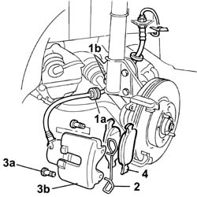

3310A62 front brake pads - replace with wheels removed
- Path
- Procedures > 33 BRAKES > 3310 DISC BRAKES > 3310A FRONT DISC BRAKES > 3310A62 front brake pads - replace with wheels removed
- Kind
- repair procedure (removal / refitting; the operation number is the code)
- Applies to
- all engines; all production periods
- Interactive page
- https://sloeber94.github.io/elrnDB-fDbl/en/#/2584630
Applies to: all engines; all production periods
 Removing
Removing
 Refitting
Refitting1. Release the rubber retainer (1a) on the brake pipe from its seating (1b) on the shock absorber.
2. Remove the spring fixing the brake caliper to the bracket.
3. Unscrew bolts (3a), then prise out front brake caliper (3b).
4. Remove the brake pads from the caliper and replace them.

Applies to: all engines; all production periods
Refitting
RemovingMeasure the thickness of the brake pads and check whether the thickness is less than the minimum permissible value.
 | Measurement | Value | |
|---|---|---|---|
- | Minimum permissible thickness (mm) | 1.5 |
Fit the new brake pads in the caliper.
Fit the front brake caliper on the disc.
Fix the brake caliper tightening the two rear fixing bolts to the recommended torque.
 | Fastening | Component | Ø | Value (daNm) |
|---|---|---|---|---|
- | Bolt | FRONT BRAKE CALIPER ASSEMBLY | M10 x 1.25 | 2.5 ÷ 3 |
Fit the caliper fixing spring in the correct position.
Secure the brake pipe to the damper